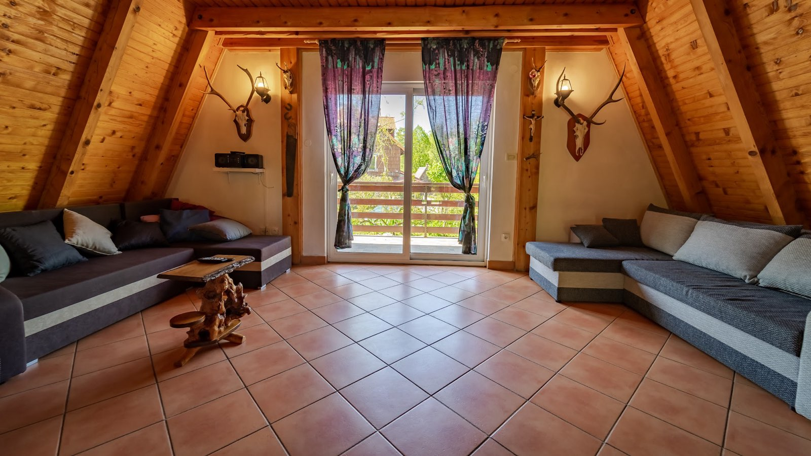
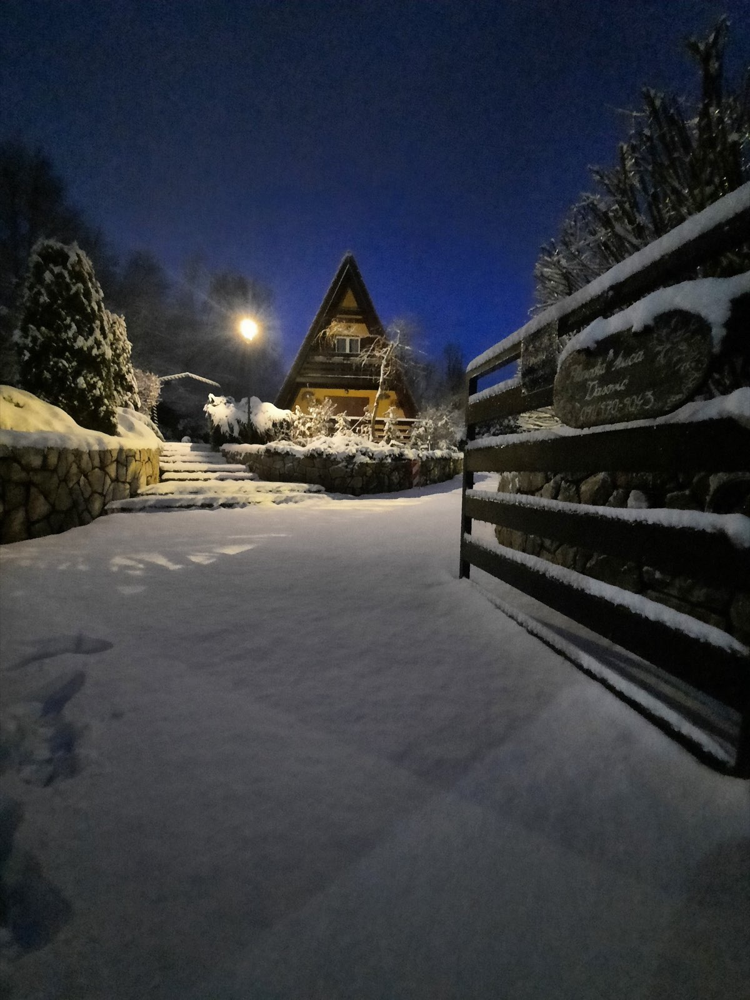
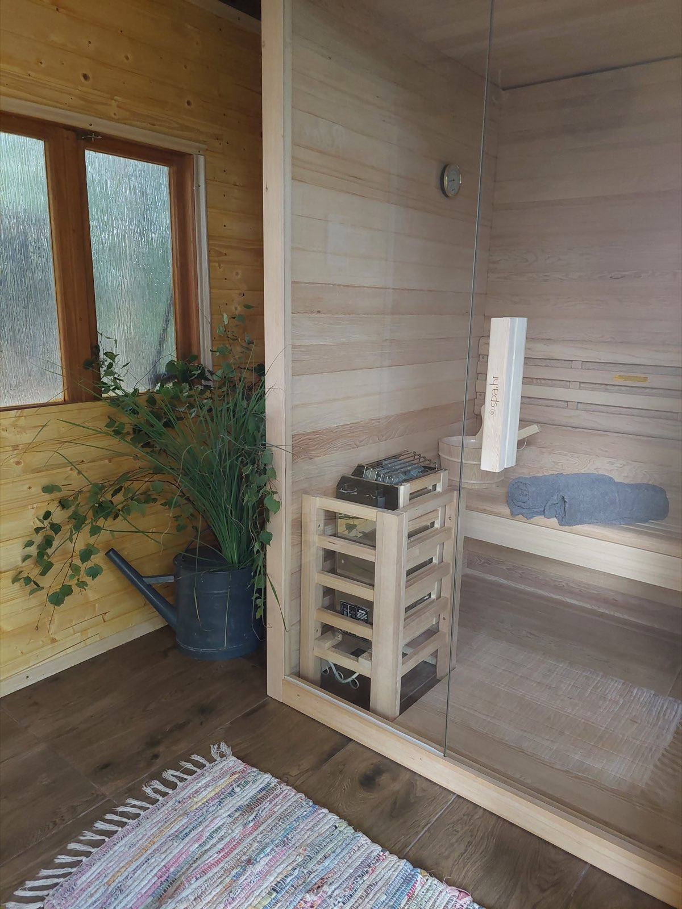

Kamin i roštilj
Natkriveni prostor s otvorenim kaminom za druženja i roštilj, s dugim drvenim stolom i pogledom na vrt.
Planinska kuća Dasović je drvena A-kuća u Fužinama, na adresi Za goricom 46. Na velikom uređenom imanju čekaju vas natkriveni prostor s otvorenim kaminom i roštiljem, sauna i retro hot tub, a centar Fužina je, kako pišu gosti, pet minuta laganog hoda.

Unutra je sve u drvu: kosi stropovi od borovine, rogovi koji se spajaju u vrhu kuće i staklena vrata na balkon. U dnevnom boravku dva velika kauča, u kutu peć na drva i viseća stolica, a kuhinja s blagovaonicom ima stol za cijelo društvo.
Kat je potkrovlje s dvjema spavaćim sobama: jednom s bračnim krevetom i drugom s dva odvojena kreveta ispod samog krova.
„Ugodan ambijent, sređen okoliš…” – Ante M.

Ljeti oker pročelje, cvijeće na balkonu i zelena živica oko kuće. Zimi snijeg na stazi, upaljena svjetla i drveni natpis na ulazu na imanje.

Natkriveni prostor s otvorenim kaminom za druženja i roštilj, s dugim drvenim stolom i pogledom na vrt.

Sauna od svijetlog drva za hladne gorske večeri i odmor nakon šetnje.
„Retro hot tube jedna od boljih stvari.” Topla kupka nakon dana u gorskoj tišini.
Laura Z., Google recenzijaVeliko uređeno imanje, idealno i za obitelji s psima. Parkirno mjesto je uz samu kuću.
prema recenzijama gostijuUgodan ambijent, sređen okoliš, parkirno mjesto uz kuću, natkriveni prostor s otvorenim kaminom za druženja i roštilj, a najveći plus… mir i tišina. Udaljeno od centra Fužina 5 minuta laganog hoda, a imate osjećaj da ste sami. Preporučam.
Doslovno oduševljeni sa svime u objektu i susretljivošću i ljubaznošću domaćina. Ogromno imanje, uredno, s dodatnim sadržajima. Samo preporuka. Evo i za nekoliko dana smo opet na istom mjestu s ogromnim zadovoljstvom.
Tiho, mirno okruženje za odmor duše i tijela. Ljubaznost domaćina odlična. Retro hot tube jedna od boljih stvari.
Predivan smještaj, preporuka svim ljubiteljima prirode, obiteljima s djecom i pesekima. Domaćin jako ljubazan i tu je za svaku pomoć. Bio je ovo predivan vikend i sigurno ćemo se vratiti opet.
Prva liga, i domaćin i objekt.
Recenzije su preuzete s Google profila kuće, uz minimalno skraćivanje i ispravljene dijakritičke znakove.
Za cijene i slobodne termine najbrže je nazvati domaćina.
Upišite datume i broj gostiju. Upit se složi u gotov tekst, a domaćina možete odmah nazvati.